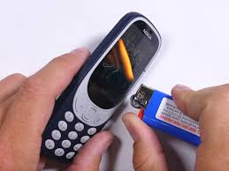
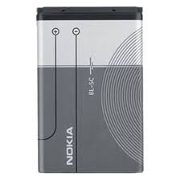
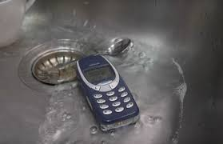

El Nokia indestructible
El teléfono que sobrevive a todo
Una bomba o incluso al fin del mundo
Durabilidad
El Nokia indestructible es el teléfono más resistente del mercado. Su carcasa de plástico duro y su pantalla de cristal irrompible lo hacen el teléfono perfecto para los más aventureros.
Batería
La batería del Nokia indestructible dura hasta 1 semana sin necesidad de recargarla. Ideal para viajes largos o para olvidarte del cargador.
Resistencia al agua
El Nokia indestructible es resistente al agua. Puedes sumergirlo hasta 1 metro de profundidad durante 30 minutos sin que le pase nada.
